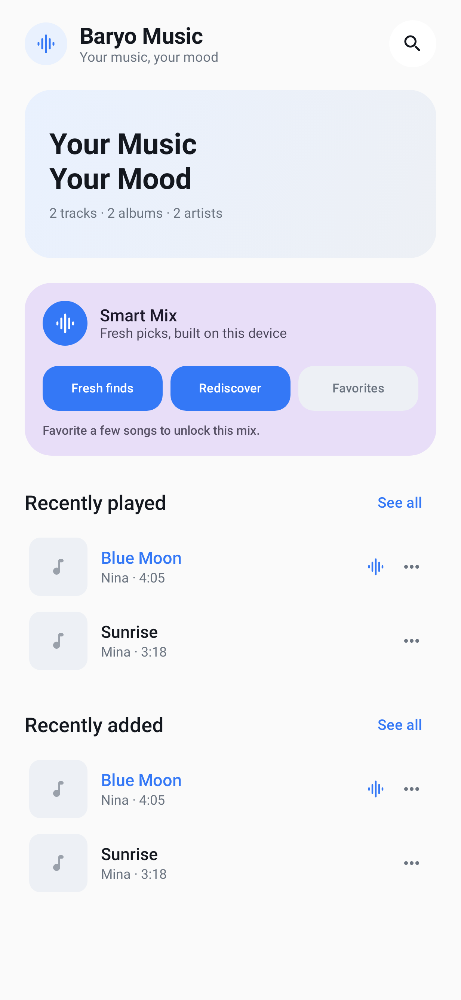
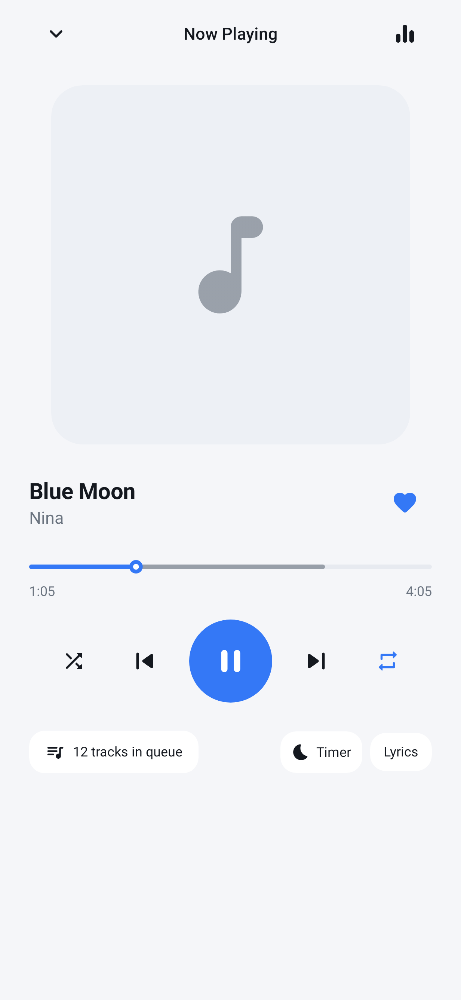

Offline Smart Mix
Fresh Finds, Rediscover and Favorites, built from your local library and playback signals.
Listen to the music already on your phone, with local mixes, synced lyrics, optional Crossfade and online lyrics, Bass Boost and portable playlists.
Baryo Music plays audio from your phone's indexed library and puts the controls where you need them—without a bundled sample collection or hidden streaming catalog.
Fresh Finds, Rediscover and Favorites, built from your local library and playback signals.
Import LRC files, follow timed lines during playback, and tap a line to seek to its timestamp.
Stop playback after a chosen countdown or when the current track ends.
Advanced playback-session audio controls in Settings; available effects depend on Android device support.
Overlap consecutive tracks with a smooth transition. Optional and disabled by default.
Optional LRCLIB lookup, off by default. Local lyrics take priority; audio is never uploaded.
Playback-progress updates avoid unnecessary repeated library work while you browse.
Import and export M3U/M3U8 lists, matching entries to files already in your library.
Edit title, artist, album and track number through Android's file-write consent flow.
Select multiple tracks to play, queue or add them to a playlist, then manage playback order.
Choose White, Orange or Dark; the selection is saved in Settings.
The player reads the local audio library indexed by Android. Smart Mix is built on-device; tracks and playback history are not sent to generate a mix. Online lyrics are optional and off by default. When enabled, LRCLIB receives the track title and artist, plus album and duration when available; audio, file paths and local lyric files are never uploaded, and local lyrics take priority.
A low-glare dark option, clear playback controls, and quick access to your home library.



Install guide: Choose the package for your device; if you are unsure, use Universal. After downloading, allow Android to install apps from this source. These are direct-install APKs, not Google Play downloads. Keep the previous app installed when upgrading. These APKs are signed with Android's Debug certificate, not a Google Play production signing key; in-place updates require a build signed with the same key.
Baryo Music is an Android music player designed for the personal collection stored on your phone. Listen to the files you already keep, with library and playlist tools, Smart Mix, Crossfade and advanced playback controls, without depending on a streaming catalog.
Library tools, synced lyrics, a sleep timer, tag editing and Smart Mix work with the device's real indexed media. Crossfade and Bass Boost/equalizer controls are available in Settings. Automatic LRCLIB lyrics are a separate opt-in, off by default; when enabled, only track metadata is queried and local lyrics remain first. The app does not ship with sample tracks or accounts; which songs appear depends on Android MediaStore and the permissions you grant.
Questions, feedback or a bug report? Reach out.